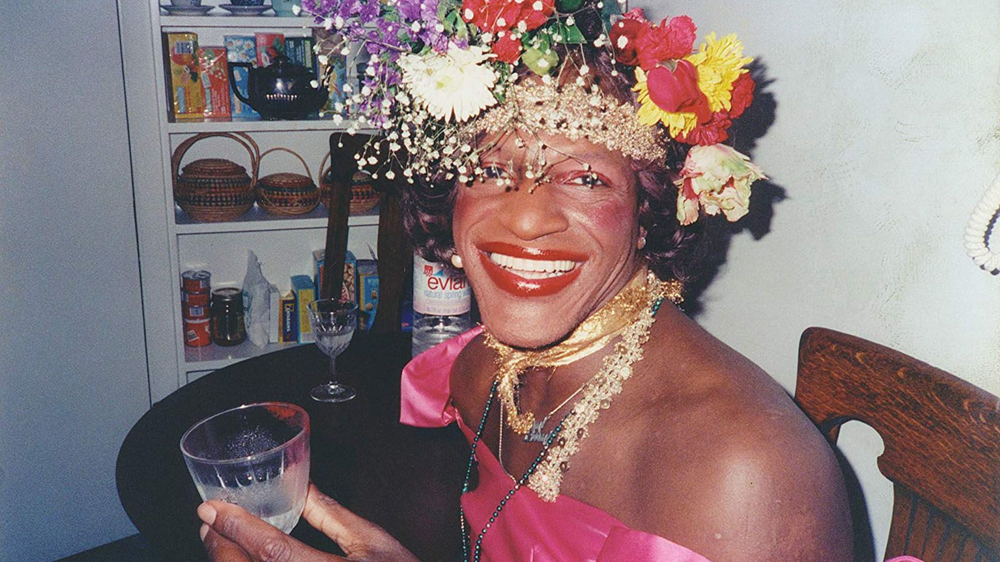

MARSHA P. JOHNSON
A pioneer in the U.S. LGBTQ+ rights movement
August 24, 1945 (Elizabeth, NJ) - July 6, 1992 (New York, NY)
- A powerful black transgender woman
- Self-identified as gay, transvestite, and a drag queen at the time
- Most known for activism during the Stonewall Riots
- Advocated for LGBTQ+ youth
- Fought for those with HIV/AIDS

"Pay it no mind," in response to questions of her gender.